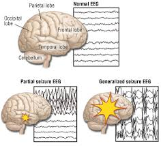
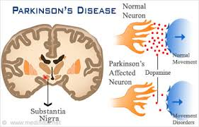

Hersenaandoeningen en Genen
Tijdens mijn opleiding Psychobiologie en Neurobiologie heb ik veel verschillende hersenaandoeningen voorbij zien komen. De laatste jaren wordt er, mede door de huidige technieken, veel meer gekeken naar de genen die betrokken zijn bij hersenaandoeningen. Het viel mij op dat de genen die betrokken zijn bij verschillende hersenaandoeningen nooit echt met elkaar vergeleken worden. Ook bij het zoeken op internet kon ik geen vergelijking vinden van genen die bij verschillende hersenaandoeningen. Wel is deze data is te vinden op het genen gedeelte van PubMed (http://www.ncbi.nlm.nih.gov/gene/). Er zullen voor dit project 5 hersenaandoeningen (Ziekte van Alzheimer, Ziekte van Parkinson, Ziekte van Huntington, Depressie en Epilepsie) worden gekozen en van die aandoeningen worden de 20 meest relevante genen gekozen. Door het visueel maken hiervan kan er gekeken worden of verschillende genen betrokken zijn bij dezelfde hersenaandoeningen.
De visualisatie hieronder heeft op de x-as de 23 chromosomen en op de y-as de 5 verschillende hersenaandoeningen staan. De positie op de x-as geeft aan waar het gen zich op het chromosoom bevindt. Het verschil in kleur en groote van het ovaal geven de relevantie aan, des te donkerder en groter des te relevanter. Daarnaast zal wanneer de muis op het ovaal wordt gehouden de informatie van het gen getoond worden, de rank in relevantie en de link naar de gen informatie op PubMed.
Doormiddel van de buttons kan een specifieke hersenaandoeningen geselecteerd worden, daarnaast zullen van de andere hersenaandoeningen de genen getoond worden die ook bij de geselecteerde hersenaandoening betrokken zijn.
 en iemand met Alzheimer (rechts).")
Ziekte van Alzheimer
Ziekte: De ziekte van Alzheimer (kortweg Alzheimer) zorgt voor 60% tot 70% van dementiegevallen. Het is een chronische neurodegeneratieve aandoening, waarbij het meest herkenbare symptoom het verlies van geheugen is. De oorzaak van Alzheimer is nog steeds niet bekend, maar het grootste risico komt vanuit de genen en daarnaast zijn andere risicofactoren depressie en hersenbeschadigingen. Alzheimer wordt geassocieerd met plaques en tangles doe zich opbouwen in de hersenen. Onderzoek heeft aangetoond dat ouderen met een hoge opleiding minder kans hebben op het ontwikkelen van Alzheimer.
Diagnose: De diagnose wordt gedaan op basis van de Mini-mental state examination.
Behandeling: Op dit moment is er nog geen behandeling voor Alzheimer. Gemiddeld 6 jaar na de diagnose overlijden de mensen, meestal aan een longontsteking of uitdroging.
 dan iemand zonder een depressie")
Depressie
Ziekte: Depressie is een psychische aandoeningen die zich kenmerkt door constante neerslachtigheid wat gepaard gaat met een laag zelfbeeld en verlies van levenslust. Bij het ontstaan van een depressie spelen verschillende factoren een rol; biologische, psychologische en sociale factoren.
Diagnose: De diagnose wordt gemaakt op basis van ervaringen van degenen zelf en de omgeving en de "mental status examination". Daarnaast wordt er gebruik gemaakt van DSM-IV TR, in dit handboek staat beschreven aan welke criteria voldaan moeten worden. De eerste keer dat iemand een depressie heeft is gemiddeld tussen de 20 en 30 jaar.
Behandeling: Er kunnen antidepressiva voorgeschreven worden, maar lijken het effectiefst voor mensen met een zware depressie te zijn. Daarnaast bestaat de behandeling vaak uit therapie.

Epilepsie
Ziekte: Epilepsie wordt gekenmerkt door insulten, welke erg kort kunnen zijn zonder dat ze opgemerkt worden tot erg lang met veel schokken. De oorzaak van epilepsie is nog steeds onbekend, maar sommige mensen ontwikkelen het naar aanleiding van een hersenbloeding, hersenletsel of een hersentumor. De insulten worden veroorzaakt door extreme en abnormale corticale hersenactiviteit. De aanvallen kunnen partieel zijn, waarbij ze in een specifiek deel van de hersenen plaatsvinden of gegeneraliseerd, waarbij de insulten zich over de hele hersenen verspreiden.
Diagnose: De diagnose wordt gemaakt op basis van de beschrijving van de aanvallen gecombineerd met een EEG.
Behandeling: In 70% van de gevallen zijn de insulten te controleren met medicatie, wanneer dit niet het geval is kunnen neurostimulatie, een operatie of veranderingen in het dieet een optie zijn. Het is belangrijk om te melden dat in geval van medicatie epilepsie niet genezen wordt, maar dat insulten worden voorkomen.
 en zonder Huntington (onder).")
Ziekte van Huntington
Ziekte: De ziekte van Huntington is een neurodegeneratieve erfelijke aandoeningen. Het zal de spiercoördinatie beïnvloeden en zal uiteindelijk zorgen voor mentale achteruitgang en gedragssymptomen. De symptomen kunnen variëren tussen individuen en mensen uit de familie, maar het verloop is over het algemeen voorspelbaar. Meestal uit de ziekte zich tussen de 35 en 44 jaar, maar in 6% van de gevallen begint de ziekte voordat iemand 21 jaar is.
Diagnose: De diagnose kan gemaakt worden op basis van klinische symptomen. Daarnaast kan het gedaan worden doormiddel van genetisch onderzoek, want een specifiek dominant erfelijk gen is verantwoordelijk voor deze ziekte
Behandeling: Er is op dit moment geen behandeling voor de Ziekte van Huntington, maar met medicijnen kunnen de symptomen verlicht worden. Na gemiddeld 18 jaren leidt de ziekte tot de dood van de patiënt, maar meestal overlijdt de patiënt niet aan de ziekte zelf maar aan bijkomende oorzaken als een longontsteking.

Ziekte van Parkinson
Ziekte: De ziekte van Parkinson is een degeneratieve aandoening van het centraal zenuwstelsel en heeft voornamelijk een effect op de motoriek. Dit komt door de degeneratie (afsterven) van de zenuwcellen voornamelijk in de substantia nigra. De oorzaak hiervan is nog niet bekend. In het begin zijn de meest aanwezige symptomen de problemen met de motoriek. Later kunnen er gedrags- en geheugenproblemen ontstaan.
Diagnose: De diagnose kan gemaakt worden op basis van klinisch onderzoek. Daarnaast kan er aanvullend een CT of MRI scan gedaan worden. Deze kan aantonen dat er een tekort aan dopamine is, maar toont niet aan dat de patiënt werkelijk de ziekte van Parkinson heeft.
Behandeling: De behandeling bestaat uit het toedienen van L-DOPA en dopamine antagonisten, maar later is deze behandeling niet meer effectief omdat er dan te weinig dopamine cellen zijn om deze stoffen op te nemen. Wanneer medicijnen niet meer werken kan het doen van deep brain stimulation een oplossing zijn. Mensen met Parkinson hebben een minder lange levensverwachting.